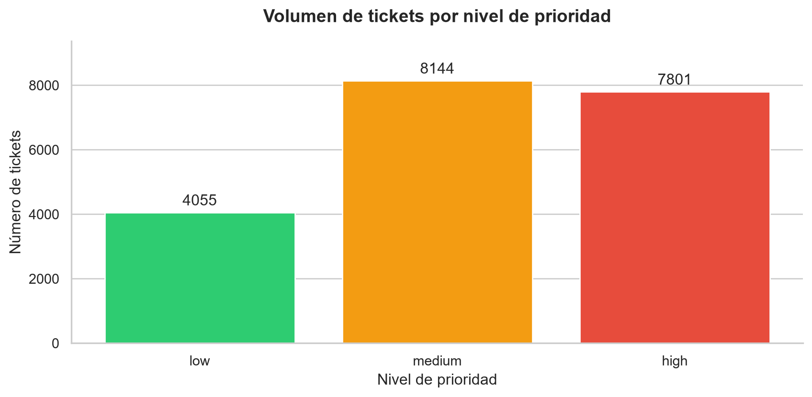
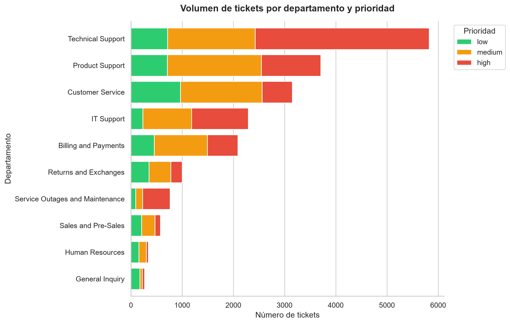

Grupo J: Victor, Mercedes, Alejandro y Christopher
1. Contexto y dataset
1.1 Origen y justificación
Para este proyecto hemos seleccionado un dataset público de tickets de soporte. El objetivo es analizar el volumen de incidencias desde la perspectiva de un administrador de sistemas: qué departamentos reciben más tickets, qué prioridades predominan y qué registros conviene revisar primero.
El dataset contiene tickets generados sintéticamente y se distribuye bajo la licencia CC BY 4.0. Los resultados describen esta muestra y sirven como ejercicio de análisis; no demuestran la carga de trabajo real de una empresa.
Incluye departamentos técnicos y otras áreas de atención al cliente. Por tanto, no todos los tickets representan fallos de infraestructura.
1.2 Columnas principales
Columna
Significado
Utilidad
queue
Departamento o cola asignada
Comparar volumen entre equipos
priority
Prioridad asignada
Identificar registros de revisión preferente
type
Tipo de ticket
Distinguir incidentes, solicitudes, problemas y cambios
language
Idioma del ticket
Analizar necesidades lingüísticas
subject
Asunto del ticket
Consultar ejemplos de incidencias
1.3 Preguntas del análisis
¿Cómo se distribuyen los tickets por prioridad?
¿Qué departamentos concentran más tickets y de qué tipo?
¿Cómo se relacionan prioridad e idioma?
¿Qué tickets combinan prioridad alta y tipo incidente?
¿Qué limitaciones tienen estos datos para tomar decisiones operativas?
2. Exploración inicial y limpieza
2.1 Carga y estructura
Conservamos una copia original para comparar los datos antes y después de las transformaciones.
import pandas as pdimport matplotlib.pyplot as pltimport seaborn as snsimport plotly.express as pxarchivo ="dataset-tickets-multi-lang-4-20k.csv"df_original = pd.read_csv(archivo)df = df_original.copy()columnas_necesarias = ["queue", "priority", "type", "language", "subject"]columnas_faltantes = [c for c in columnas_necesarias if c notin df.columns]if columnas_faltantes:raiseValueError(f"Faltan columnas necesarias: {columnas_faltantes}")if df.empty:raiseValueError("El CSV no contiene registros para analizar.")numero_filas, numero_columnas = df.shapeprint(f"El dataset tiene {numero_filas} filas y {numero_columnas} columnas.")print("Columnas disponibles:")print(df.columns.tolist())df.info()
Interpretación técnica: comprobamos estructura, tipos y disponibilidad de las columnas necesarias. Un SysAdmin debe verificar el formato de las exportaciones antes de automatizar su análisis.
2.2 Resumen descriptivo
df.describe(include="all")
subject
body
answer
type
queue
priority
language
tag_1
tag_2
tag_3
tag_4
tag_5
tag_6
tag_7
tag_8
count
18539
19998
19996
20000
20000
20000
20000
20000
19954
19905
18461
13091
7351
3928
1907
unique
18539
19998
19996
4
10
3
2
148
204
344
481
578
566
492
386
top
Unvorhergesehener Absturz der Datenanalyse-Pla...
Die Datenanalyse-Plattform brach unerwartet ab...
Ich werde Ihnen bei der Lösung des Problems he...
Incident
Technical Support
medium
en
Technical
Performance
IT
Tech Support
Tech Support
Resolution
Resolution
Documentation
freq
1
1
1
7978
5824
8144
11923
5034
2795
3309
3436
2287
841
417
162
Interpretación técnica: el resumen permite revisar valores no nulos, categorías distintas y valores frecuentes. Un asunto repetido no demuestra por sí solo una misma causa raíz.
Interpretación técnica: un nulo en una etiqueta opcional no justifica borrar todo el ticket. La ausencia de prioridad o departamento sí limita los análisis que utilizan esas variables.
duplicados_exactos =int(df.duplicated().sum())print(f"Filas completamente duplicadas: {duplicados_exactos}")
Filas completamente duplicadas: 0
Decisión de limpieza: conservamos los duplicados y documentamos su número. Sin verificar identificadores o fechas, dos filas iguales no demuestran por sí solas un error de exportación. Su eliminación requeriría una comprobación adicional.
2.4 Normalización de categorías
Eliminamos espacios al principio y al final y normalizamos mayúsculas y minúsculas. Las categorías vacías pasan a ser valores ausentes.
Interpretación técnica: evitamos separar categorías por espacios o mayúsculas. No alteramos el contenido de los asuntos. El filtro de incidentes utilizará incident porque hemos normalizado type a minúsculas.
2.5 Tres resúmenes estadísticos clave
Los porcentajes se calculan sobre el total de filas, incluyendo los valores ausentes en el resumen.
Interpretación técnica: la distribución permite revisar la clasificación de urgencia. Una proporción alta de tickets urgentes justificaría comprobar el criterio de prioridad, pero no demuestra sobrecarga por sí sola.
Interpretación técnica: orienta sobre competencias lingüísticas necesarias. Para organizar guardias reales también harían falta horarios de llegada y disponibilidad del personal.
Interpretación técnica: distinguir incidentes, solicitudes, problemas y cambios ayuda a separar trabajo reactivo y planificado. Se revisarían las categorías más frecuentes para estudiar tareas repetitivas que puedan documentarse o automatizarse.
2.6 Selección por posición con iloc
df.iloc[:5, :7]
subject
body
answer
type
queue
priority
language
0
Unvorhergesehener Absturz der Datenanalyse-Pla...
Die Datenanalyse-Plattform brach unerwartet ab...
Ich werde Ihnen bei der Lösung des Problems he...
incident
General Inquiry
low
de
1
Customer Support Inquiry
Seeking information on digital strategies that...
We offer a variety of digital strategies and s...
request
Customer Service
medium
en
2
Data Analytics for Investment
I am contacting you to request information on ...
I am here to assist you with data analytics to...
request
Customer Service
medium
en
3
Krankenhaus-Dienstleistung-Problem
Ein Medien-Daten-Sperrverhalten trat aufgrund ...
Zurück zur E-Mail-Beschwerde über den Sperrver...
incident
Customer Service
high
de
4
Security
Dear Customer Support, I am reaching out to in...
Dear [name], we take the security of medical d...
request
Customer Service
medium
en
Interpretación técnica: inspeccionamos las primeras cinco filas y siete columnas por posición. Esta muestra permite comprobar el formato, pero no representa por sí sola todo el dataset.
3. Análisis avanzado con Pandas
3.1 Agrupación con groupby
Contamos los tickets de cada combinación de departamento y tipo.
Interpretación técnica: groupby forma grupos, size() cuenta filas y unstack() convierte tipos en columnas. Incluimos grupos con categorías ausentes. La tabla mide volumen, no esfuerzo de resolución.
volumen_por_cola = df["queue"].value_counts()ifnot volumen_por_cola.empty: cola_principal = volumen_por_cola.idxmax() tickets_cola_principal =int(volumen_por_cola.max()) porcentaje_cola_principal = tickets_cola_principal /len(df) *100print(f"El departamento con más tickets es {cola_principal}, "f"con {tickets_cola_principal} registros "f"({porcentaje_cola_principal:.2f}% del total)." )else:print("No hay departamentos informados para comparar.")
El departamento con más tickets es Technical Support, con 5824 registros (29.12% del total).
Acción propuesta: revisar las categorías del departamento con mayor volumen y estudiar documentación, asignación o automatización. Para demostrar saturación harían falta datos de personal, pendientes y tiempos de resolución.
3.2 Tabla dinámica con pivot_table
Utilizamos una columna auxiliar de valor 1 para contar registros sin depender de que el asunto esté informado.
Interpretación técnica: cada celda cuenta tickets por prioridad e idioma, excluyendo registros sin alguna de estas categorías. Un idioma con más tickets urgentes también puede tener más tickets en general; no debe confundirse volumen con proporción de urgencia.
altos_por_idioma = ( df.loc[df["priority"].eq("high").fillna(False), "language"] .value_counts())ifnot altos_por_idioma.empty: idioma_principal = altos_por_idioma.idxmax() cantidad_altos =int(altos_por_idioma.max())print("El idioma con más tickets de prioridad alta es "f"{idioma_principal}, con {cantidad_altos} tickets." )else:print("No hay tickets de prioridad alta con idioma informado.")
El idioma con más tickets de prioridad alta es en, con 4571 tickets.
Acción propuesta: comprobar capacidad lingüística para atender los tickets urgentes. No puede concluirse que el idioma cause la prioridad o retrasos de resolución.
3.3 Filtrado avanzado con loc
Seleccionamos prioridad alta y tipo incidente, mostrando las columnas relevantes para una primera revisión.
condicion_urgentes = ( df["priority"].eq("high") & df["type"].eq("incident")).fillna(False)tickets_urgentes = df.loc[ condicion_urgentes, ["queue", "subject", "language"]]print(f"Incidentes de prioridad alta: {len(tickets_urgentes)}")print(f"Porcentaje sobre el total: {len(tickets_urgentes) /len(df) *100:.2f}%")tickets_urgentes.head(10)
Incidentes de prioridad alta: 3526
Porcentaje sobre el total: 17.63%
queue
subject
language
3
Customer Service
Krankenhaus-Dienstleistung-Problem
de
11
Technical Support
Reported Issue with Project Sync Resulting in ...
en
14
Technical Support
Urgent: Data Breach Identified in Hospital Net...
en
18
Customer Service
Urgent: Identification of a Data Breach within...
en
19
Product Support
NaN
en
25
Technical Support
Verlust medizinischer Daten gemeldet
de
31
Technical Support
Anfrage für technischen Support
de
37
Service Outages and Maintenance
Problems with SaaS-Tools Integration
de
56
Technical Support
NaN
en
62
Technical Support
Customer Support
en
Interpretación técnica: loc combina condiciones y selecciona columnas. La lista apoya el triaje, pero no es una alerta temprana ni sustituye la confirmación de impacto, servicio afectado y acuerdos de nivel de servicio.
3.4 Combinación de subconjuntos con concat
Como demostración didáctica, reunimos tickets en inglés y alemán.
df_ingles = df.loc[df["language"].eq("en").fillna(False)].copy()df_aleman = df.loc[df["language"].eq("de").fillna(False)].copy()df_combinado = pd.concat([df_ingles, df_aleman], ignore_index=True)print(f"Tickets en inglés: {len(df_ingles)}")print(f"Tickets en alemán: {len(df_aleman)}")print(f"Tickets combinados: {len(df_combinado)}")print(f"Tickets del dataset completo: {len(df)}")print(f"Tickets no incluidos: {len(df) -len(df_combinado)}")df_combinado.head()
Tickets en inglés: 11923
Tickets en alemán: 8077
Tickets combinados: 20000
Tickets del dataset completo: 20000
Tickets no incluidos: 0
subject
body
answer
type
queue
priority
language
tag_1
tag_2
tag_3
tag_4
tag_5
tag_6
tag_7
tag_8
0
Customer Support Inquiry
Seeking information on digital strategies that...
We offer a variety of digital strategies and s...
request
Customer Service
medium
en
Feedback
Sales
IT
Tech Support
NaN
NaN
NaN
NaN
1
Data Analytics for Investment
I am contacting you to request information on ...
I am here to assist you with data analytics to...
request
Customer Service
medium
en
Technical
Product
Guidance
Documentation
Performance
Feature
NaN
NaN
2
Security
Dear Customer Support, I am reaching out to in...
Dear [name], we take the security of medical d...
request
Customer Service
medium
en
Security
Customer
Compliance
Breach
Documentation
Guidance
NaN
NaN
3
Concerns About Securing Medical Data on 2-in-1...
Inquiring about best practices for securing me...
Thank you for your concern regarding securing ...
request
Technical Support
medium
en
Security
Product
Feature
IT
Tech Support
NaN
NaN
NaN
4
Problem with Integration
The integration stopped working unexpectedly, ...
I will look into the problem and call you at <...
problem
IT Support
high
en
Technical
Integration
Bug
Resolution
Outage
Documentation
NaN
NaN
Interpretación técnica: concat reúne filas e ignore_index=True genera un índice consecutivo. No incorpora fuentes externas y solo incluye los dos idiomas seleccionados. En un caso real permitiría reunir exportaciones con estructura compatible.
4. Visualizaciones
4.1 Preparación de prioridades y colores
sns.set_theme(style="whitegrid")prioridades_presentes = df["priority"].dropna().unique().tolist()orden_base = ["low", "medium", "high"]otras_prioridades =sorted(p for p in prioridades_presentes if p notin orden_base)orden_prioridad = orden_base + otras_prioridadescolores_prioridad = {"low": "#2ecc71","medium": "#f39c12","high": "#e74c3c"}for prioridad in otras_prioridades: colores_prioridad[prioridad] ="#7f8c8d"print("Orden de prioridades:", orden_prioridad)print(f"Tickets sin prioridad: {df['priority'].isna().sum()}")print(f"Tickets sin departamento: {df['queue'].isna().sum()}")
Orden de prioridades: ['low', 'medium', 'high']
Tickets sin prioridad: 0
Tickets sin departamento: 0
Criterio visual: mantenemos colores coherentes y añadimos etiquetas para no depender exclusivamente del color. Los gráficos excluyen valores ausentes en las categorías que necesitan; las prioridades adicionales se incorporan en gris.
4.2 Gráfico estático: tickets por prioridad
conteo = df["priority"].value_counts().reindex(orden_prioridad, fill_value=0)fig_estatico, ax = plt.subplots(figsize=(9, 4.5))barras = ax.bar( conteo.index, conteo.values, color=[colores_prioridad[p] for p in conteo.index])ax.bar_label(barras, padding=3)ax.set_title("Volumen de tickets por nivel de prioridad", fontsize=14, fontweight="bold", pad=15)ax.set_xlabel("Nivel de prioridad")ax.set_ylabel("Número de tickets")ax.set_ylim(0, max(int(conteo.max()), 1) *1.15)ax.grid(axis="x", visible=False)sns.despine(ax=ax)fig_estatico.tight_layout()plt.show()

Distribución de tickets por nivel de prioridad
Interpretación técnica: alturas y etiquetas comparan el número de tickets, no su tiempo de resolución. Se revisarían los criterios de clasificación y el triaje antes de modificar la dotación del equipo.
4.3 Gráfico estático: carga por departamento y prioridad
df_apilado = ( df.groupby(["queue", "priority"]).size() .unstack(fill_value=0) .reindex(columns=orden_prioridad, fill_value=0))if df_apilado.empty:print("No hay datos con departamento y prioridad para este gráfico.")else: orden_departamentos = df_apilado.sum(axis=1).sort_values().index df_apilado = df_apilado.loc[orden_departamentos] ax = df_apilado.plot( kind="barh", stacked=True, color=[colores_prioridad[p] for p in df_apilado.columns], figsize=(11, 7), width=0.8 ) ax.set_title("Volumen de tickets por departamento y prioridad", fontsize=14, fontweight="bold", pad=15) ax.set_xlabel("Número de tickets") ax.set_ylabel("Departamento") ax.legend(title="Prioridad", bbox_to_anchor=(1.02, 1), loc="upper left") ax.grid(axis="y", visible=False) sns.despine(ax=ax) plt.tight_layout() plt.show()

Volumen por departamento, desglosado por prioridad
Interpretación técnica: cada barra representa tickets con departamento y prioridad informados. Los segmentos muestran su composición. Una barra larga no demuestra saturación: deben contrastarse complejidad, personal y tiempos.
Acción propuesta: revisar las categorías del departamento con mayor volumen y valorar mejoras de documentación, enrutamiento o automatización.
4.4 Gráfico interactivo con Plotly
df_plotly = ( df.groupby(["queue", "priority"]).size() .reset_index(name="cantidad"))if df_plotly.empty:print("No hay datos con departamento y prioridad para este gráfico.")else: fig = px.bar( df_plotly, x="queue", y="cantidad", color="priority", barmode="group", template="plotly_white", category_orders={"priority": orden_prioridad}, color_discrete_map=colores_prioridad, labels={"queue": "Departamento", "cantidad": "Número de tickets", "priority": "Prioridad"}, title="Tickets por departamento y prioridad" ) fig.update_layout( font=dict(family="Arial", size=12), hovermode="x unified", xaxis_tickangle=-35, margin=dict(b=130) ) fig.show()
Comparación interactiva de tickets por departamento y prioridad
Interpretación técnica: el ratón permite consultar valores exactos y la leyenda permite ocultar categorías. Complementa las barras apiladas al facilitar comparaciones de prioridades individuales entre departamentos.
Acción propuesta: examinar los tickets de prioridad alta por departamento y seleccionar áreas que necesiten revisión detallada.
4.5 Limitación del requisito temporal
El gráfico interactivo compara categorías, pero no representa evolución temporal. La lista de columnas se muestra en el apartado 2.1 y debe revisarse para comprobar si existe una fecha de creación válida.
No se utilizarán el orden de filas ni una columna de versión como sustitutos de fechas. Si no existe una variable temporal adecuada, será necesario incorporar datos con fechas o consultar al profesor si acepta esta alternativa categórica.
El requisito temporal queda pendiente: no se considera cumplido únicamente por disponer de un gráfico interactivo.
5. Conclusiones
5.1 Resultados calculados
print(f"Registros analizados: {len(df)}")ifnot volumen_por_cola.empty: departamento_principal = volumen_por_cola.idxmax() cantidad_departamento =int(volumen_por_cola.max())print(f"Departamento con mayor volumen: {departamento_principal} ({cantidad_departamento} tickets).")prioridades_validas = df["priority"].value_counts()ifnot prioridades_validas.empty: prioridad_principal = prioridades_validas.idxmax() cantidad_prioridad =int(prioridades_validas.max())print(f"Prioridad más frecuente: {prioridad_principal} ({cantidad_prioridad} tickets).")print(f"Incidentes de prioridad alta seleccionados: {len(tickets_urgentes)}.")ifnot altos_por_idioma.empty: idioma_principal = altos_por_idioma.idxmax() cantidad_altos =int(altos_por_idioma.max())print(f"Idioma con más tickets de prioridad alta: {idioma_principal} ({cantidad_altos} tickets).")
Registros analizados: 20000
Departamento con mayor volumen: Technical Support (5824 tickets).
Prioridad más frecuente: medium (8144 tickets).
Incidentes de prioridad alta seleccionados: 3526.
Idioma con más tickets de prioridad alta: en (4571 tickets).
5.2 Propuestas desde la administración de sistemas
Distribución del volumen: revisar departamentos y categorías antes de decidir cambios de recursos.
Priorización: utilizar el filtro como apoyo al triaje, confirmando impacto y servicios afectados.
Atención por idioma: comprobar competencias lingüísticas para los tickets urgentes.
Automatización: analizar asuntos y categorías repetitivas antes de proponer respuestas automáticas o una base de conocimiento.
Calidad de datos: normalizar categorías y documentar nulos y duplicados antes de construir indicadores.
5.3 Limitaciones
Los datos son sintéticos y no demuestran el comportamiento real de una empresa.
El volumen no mide complejidad ni esfuerzo de resolución.
Sin datos de personal y tiempos no se demuestra saturación.
concat reúne subconjuntos del mismo archivo, no fuentes independientes.
Las agrupaciones excluyen categorías ausentes salvo donde se indica lo contrario.
Si hay empates en los máximos, el texto automático muestra una de las categorías empatadas.
El análisis temporal sigue pendiente de verificar una fecha válida o acordar una alternativa.
6. Fuentes y metodología de trabajo
El código utiliza como referencia la documentación oficial y adapta las operaciones al dataset. La personalización visual emplea colores coherentes, etiquetas, ordenación y una plantilla clara para facilitar la interpretación, no modificar los resultados.